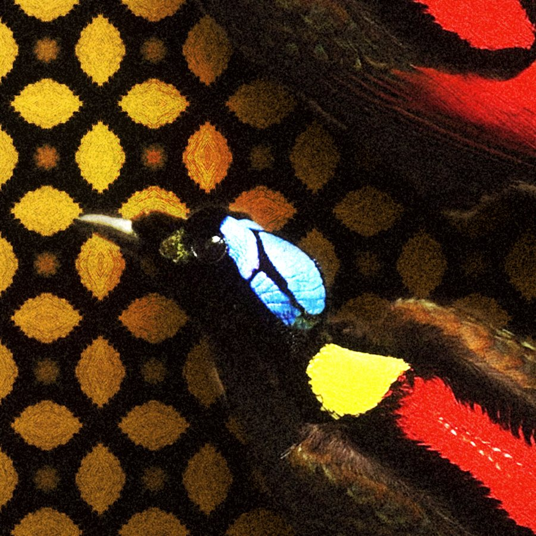
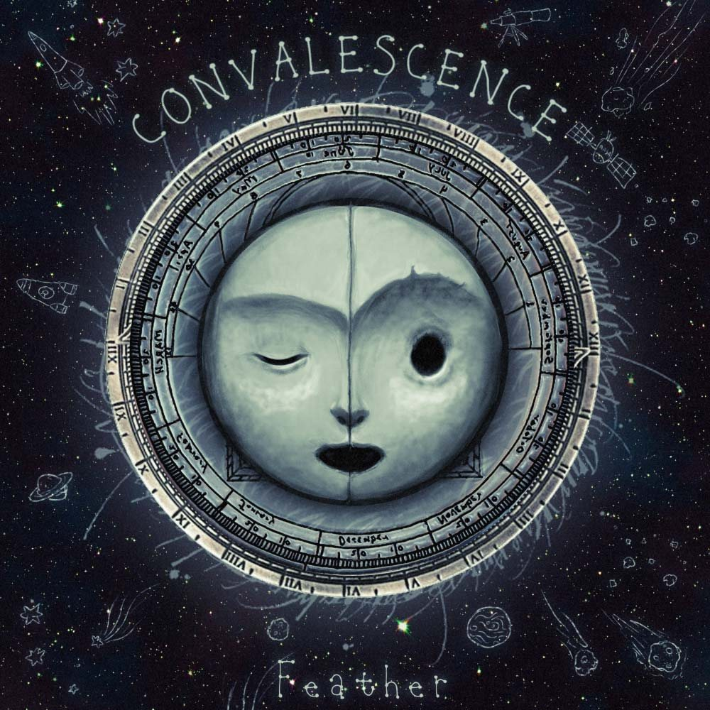
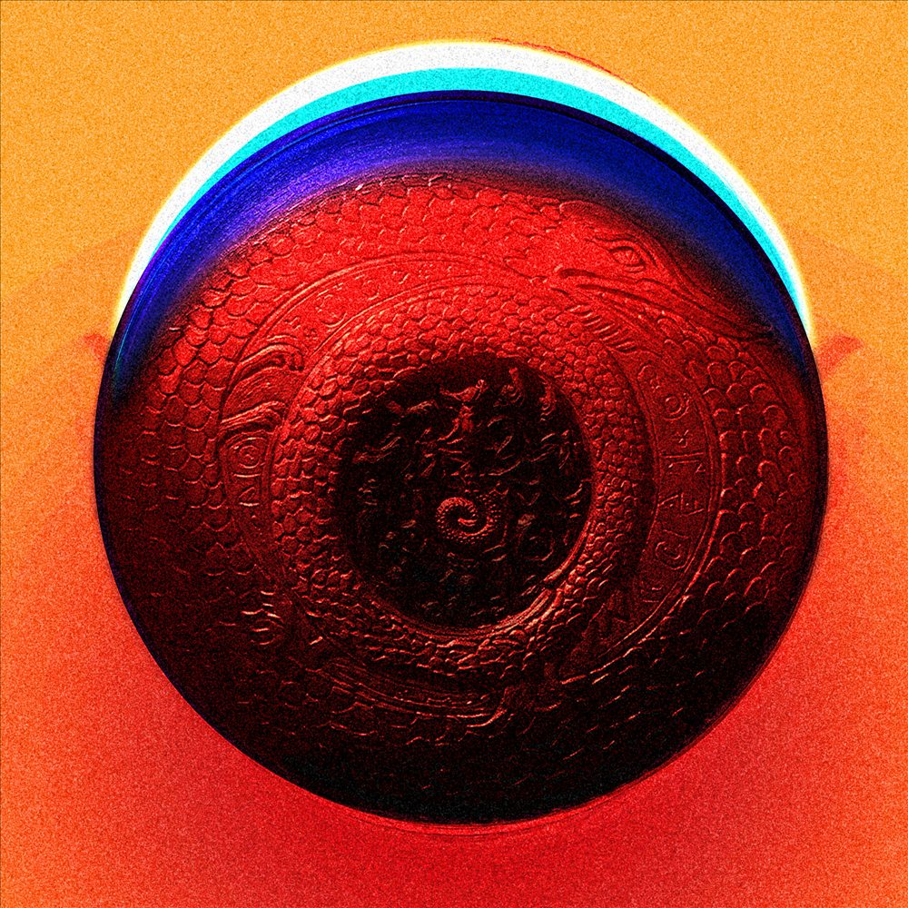
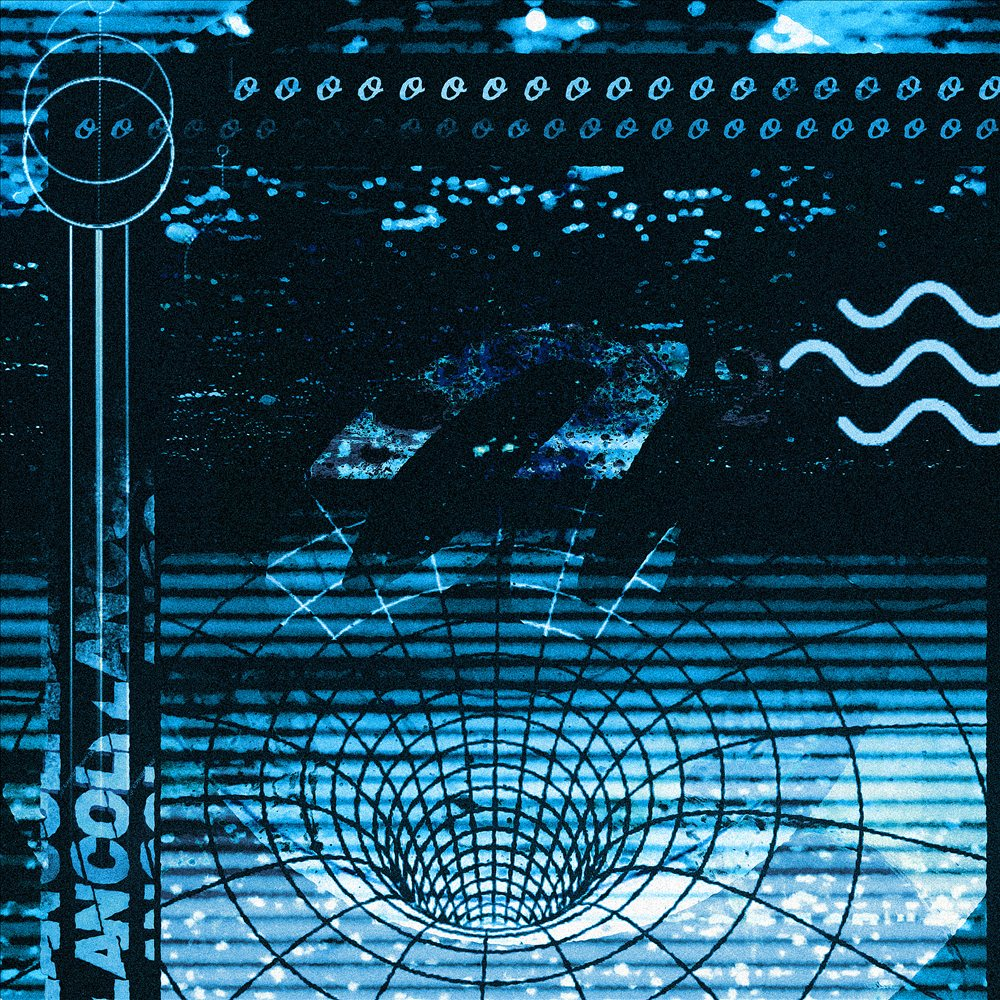
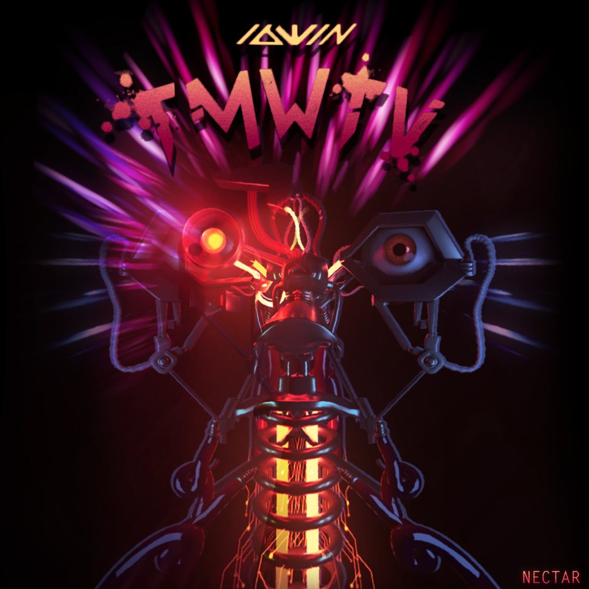
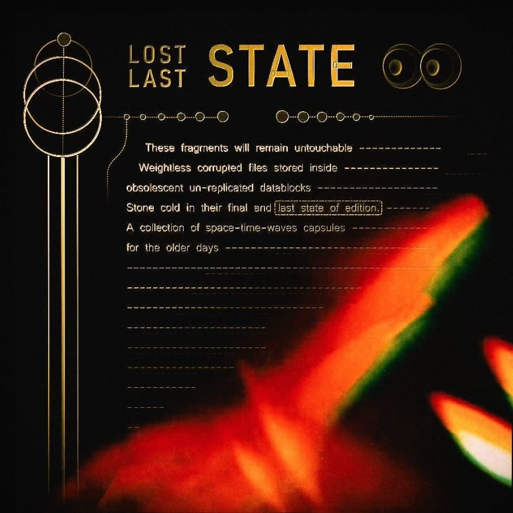
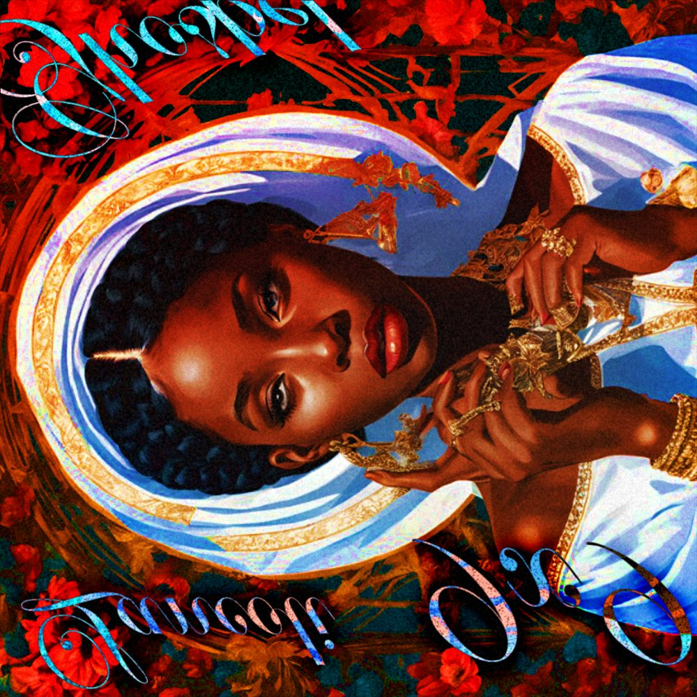
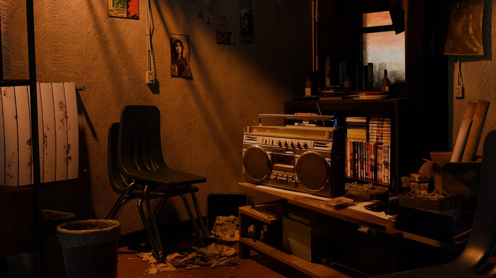
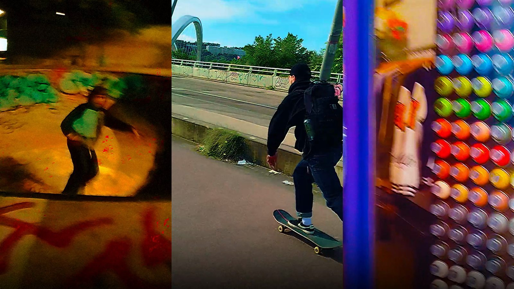

Ronny2025
Les pochettes. Puis une salle à part : les mondes, des projets audiovisuels vus depuis les coulisses.







Ici, on change de salle. Des projets audiovisuels au long cours : chacun a son décor, ses personnages et sa bande-son. On y entre par les coulisses.
 Inachevé
Inachevé
Après les tempêtes, plus de courant. Un homme parcourt ce qui reste, à la recherche de la pièce qui manque à son installation.

ÉbaucheParis, la nuit, un poste sur l’épaule. Depuis l’accident, ce qu’il voit et ce dont il se souvient ne se séparent plus.

Micro editsLa ville vue depuis la planche : le skatepark la nuit, les dalles le jour, et les murs de bombes. Trois edits courts, à hauteur de bitume.
Un conte se fabrique lentement. La carte ouvre l’atelier : ce qui se construit entre deux sorties, avant tout le monde.